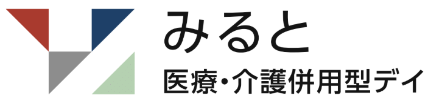

医療と介護、ふたつのデイがひとつの場所に
介護保険のデイサービスと、医療保険の重度認知症デイケアを一緒に運営しています。湯澤医院の主治医と連携しているので、体調に不安のある方も安心です。
写真：看護師が
健康チェックをする場面
健康チェックをする場面

博滇会グループ月〜土曜 9:00〜16:30（日曜・年末年始はお休み） ｜ さいたま市西区西遊馬1258
体を動かす日も、のんびりする日も。医療と介護の両方の目で見守りながら、ここに来る一日そのものを楽しんでいただくデイです。
介護保険のデイサービスと、医療保険の重度認知症デイケアを一緒に運営しています。湯澤医院の主治医と連携しているので、体調に不安のある方も安心です。
少人数のグループで、その方が「できること」に目を向けた活動を。重い片まひや関節のこわばりがある方には、作業療法士が関節を動かす訓練も行います。
施設の厨房で毎日手づくりしています。かむ力・飲み込む力に合わせた形でご用意し、治療食もご相談いただけます。グループのほかの施設にも届けている評判の味です。15時はお茶かコーヒーとおやつの時間。
芸達者な職員が多く、行事に力を入れています。ゲスト講師や地域のボランティアの方も来てくださいます。新年会・お花見・七夕・夏祭り・敬老会・12月のパーティーと、季節ごとのお楽しみがあります。
着替え・トイレ・お風呂といった毎日の動作を「生活リハビリ」として大切にし、できることを続けられるようお手伝いします。お風呂は、お体の状態に合わせた介助浴でご案内します。送迎は、さいたま市・上尾市・川越市が中心です（範囲外の方もご相談ください）。
介護保険
運動・音楽・趣味の活動を通して、人と会い、話し、楽しむ時間を。要支援・要介護の認定を受けた方がご利用いただけます。
医療保険
湯澤医院の主治医と連携し、看護師・作業療法士が担当します。医師の指示のもと、必要な医療的な処置も行います。
朝のお迎えから、夕方ご自宅にお送りするまで。一日の過ごし方の一例です。
送迎車でご自宅までお迎えにうかがいます。到着後、看護師が血圧・体温を確認します。
お体に合わせた介助浴と、体を動かす時間。医療保険のデイケアでは、少人数のグループ活動を行います。
厨房でつくった、できたての手づくりごはん。食べたあとはゆっくり休憩します。
手しごと・運動ゲーム・ボランティアの方の発表など。その日の気分で選んでいただけます。
お茶かコーヒーを選んで、おしゃべりしながらひと休み。
到着の前にお電話でお知らせしてから、ご自宅までお送りします。
ご負担は「介護保険の自己負担分」と「お食事などの実費」の合計です。いちばん多いご利用のかたち（9:00〜16:30）の、1日あたりの目安です。
介護保険のデイサービス・7時間以上8時間未満のご利用の場合
| 要介護度 | 1割負担 | 2割負担 | 3割負担 |
|---|---|---|---|
| 要介護1 | 703円 | 1,406円 | 2,109円 |
| 要介護2 | 830円 | 1,660円 | 2,490円 |
| 要介護3 | 962円 | 1,923円 | 2,884円 |
| 要介護4 | 1,093円 | 2,185円 | 3,278円 |
| 要介護5 | 1,226円 | 2,452円 | 3,678円 |
お風呂に入った日は、1割負担で43円〜59円が加わります。ご利用時間が短い日（2時間〜）・長い日（9時間まで）の料金もあります。
さいたま市の総合事業・定額制です
| 要支援度 | 1割 | 2割 | 3割 |
|---|---|---|---|
| 要支援1 | 1,921円 | 3,841円 | 5,761円 |
| 要支援2 | 3,868円 | 7,735円 | 11,602円 |
医療保険の負担割合によって変わります。料金はお電話でご案内しています。
保険の自己負担とは別にかかります
| お食事 | 850円 |
| 娯楽教養費 | 1回 500円 |
| 紙おむつ | 150円 |
| リハビリパンツ | 220円 |
| パット | 60円 |
※ ご利用の内容によって、口腔機能・栄養・個別機能訓練などの加算が加わる場合があります。また、合計額に介護職員等処遇改善加算（9.2％）が加わります。
※ 送迎を利用しない場合は、片道ごとに1割負担で51円が差し引かれます。
※ お支払いは銀行引き落としです。くわしくは重要事項説明書をご覧いただくか、お電話でお問い合わせください。
お名前やご連絡先の入力は不要です。そのまま開いて、ご家族とご一緒にご覧ください。
行事の様子やお昼ごはん、レクリエーションの風景を、職員が投稿しています。
「どちらのデイが合うかわからない」という段階でも大丈夫です。ご家族だけのご見学も受け付けています。
受付：月〜土曜 8:30〜17:30